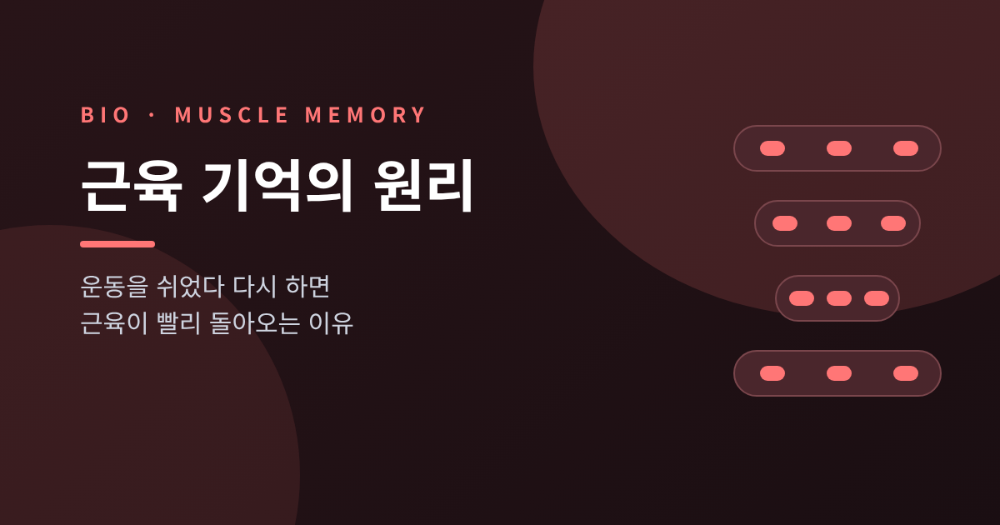
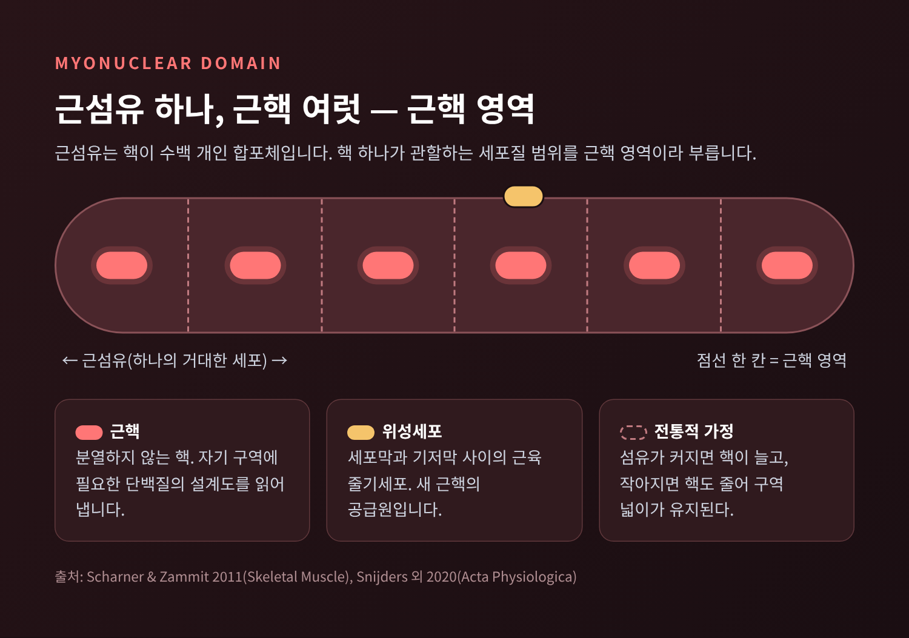
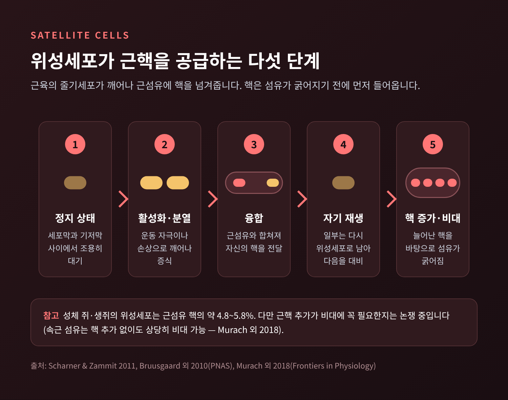
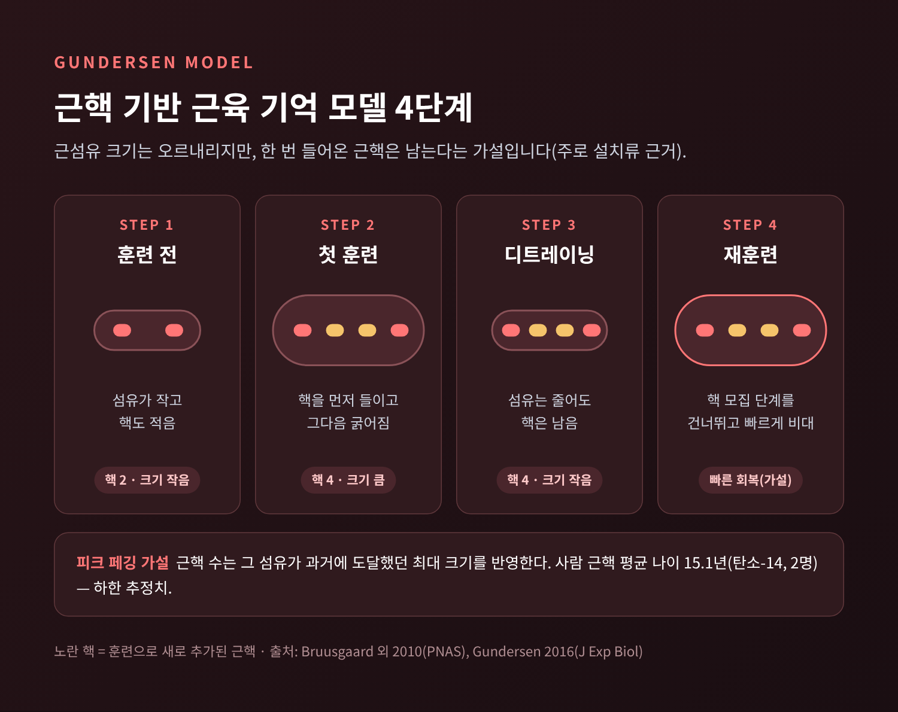
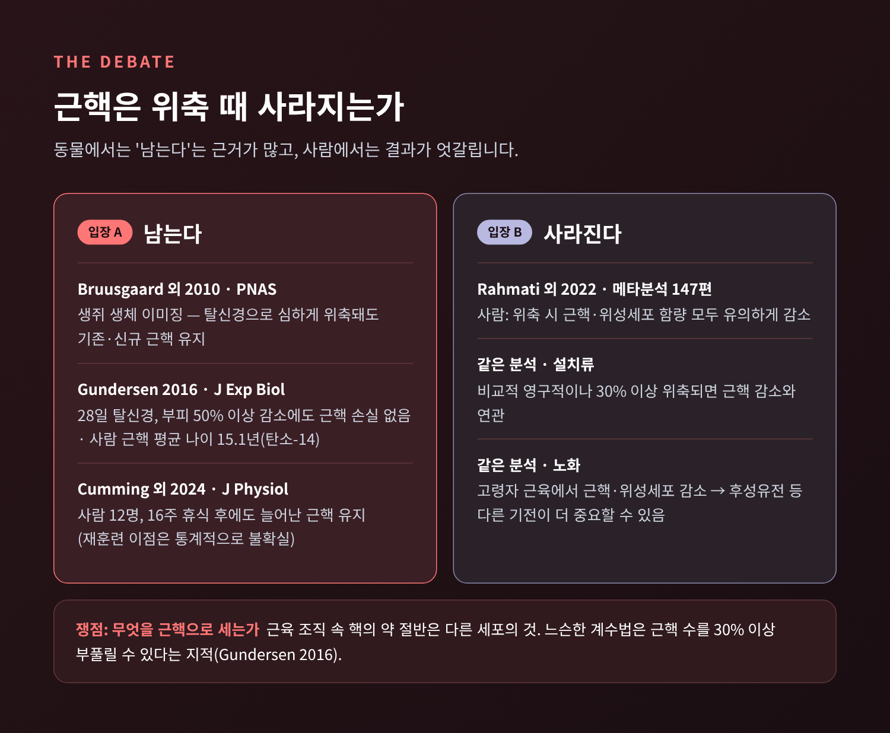
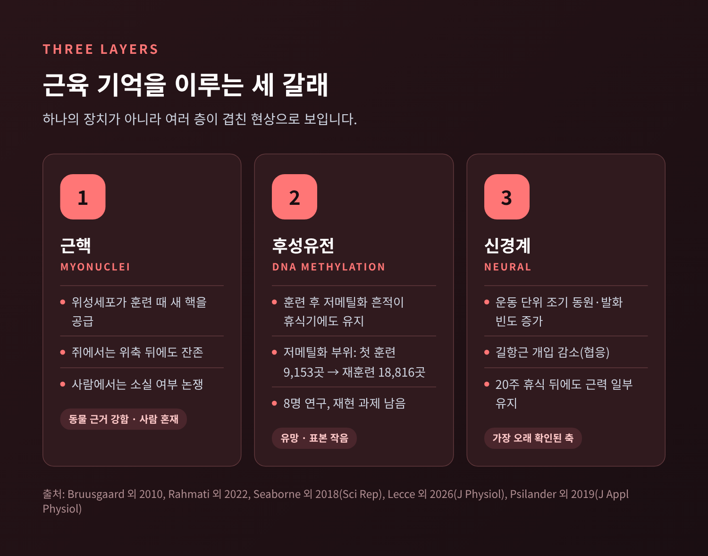
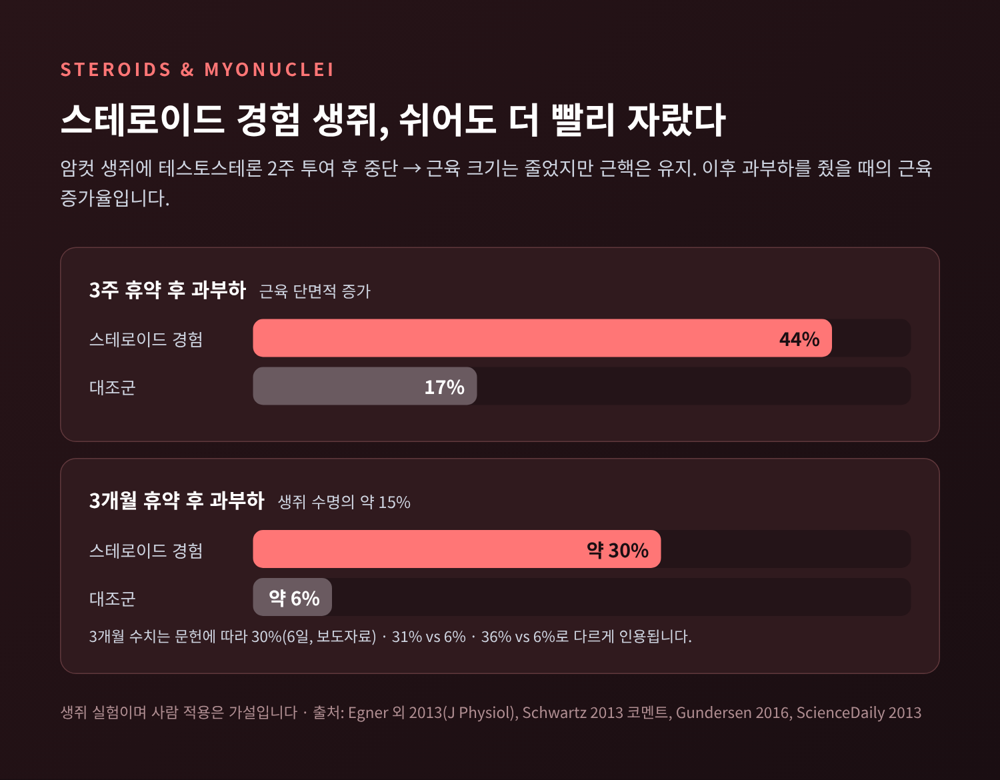

근육 기억의 원리 — 운동을 쉬었다 다시 하면 근육이 빨리 돌아오는 이유

오늘은 '근육 기억'이라고 불리는 현상을 세포 수준에서 살펴보려 합니다. 운동을 몇 달 쉬었다가 다시 시작하면 처음보다 빨리 몸이 돌아온다는 말, 한 번쯤 들어 보셨을 것입니다. 그 말이 과학적으로 어디까지 확인됐고, 어디서부터는 아직 논쟁 중인지 정리해 보겠습니다.
먼저 요점부터 적어 둡니다.
- 근섬유는 핵을 수백 개 가진 거대한 세포이고, 근력 운동을 하면 위성세포가 새 핵(근핵)을 보태 줍니다.
- 쥐 실험에서는 이렇게 늘어난 근핵이 근육이 줄어든 뒤에도 남아 있었고, 이것이 근육 기억의 세포적 기반이라는 가설이 나왔습니다. 다만 사람에게서는 근핵이 사라진다는 메타분석도 있어 견해가 갈립니다.
- 이 밖에 DNA 메틸화로 남는 '후성유전적 기억'과 신경계의 운동 학습이 함께 작용하는 것으로 보입니다.
■ 근섬유는 핵이 수백 개인 세포입니다
우리 몸의 세포는 대개 핵이 하나입니다. 골격근 섬유는 예외입니다. 근섬유 하나는 여러 세포가 합쳐져 만들어진 '합포체'로, 보통 수백 개의 근핵이 함께 다스립니다. 발생 과정에서 핵이 하나인 근모세포들이 서로 융합해 긴 관 모양의 세포를 이루기 때문입니다.
크기도 남다릅니다. 생쥐 다리 근섬유 하나의 부피는 약 5나노리터입니다. 일반적인 포유류 세포가 10만분의 1에서 1,000분의 1나노리터 수준이니, 자릿수 자체가 다릅니다.
이렇게 큰 세포를 핵 하나가 감당할 수는 없습니다. 그래서 생겨난 개념이 근핵 영역(myonuclear domain)입니다. 핵 하나가 유전자를 읽어 단백질을 만들어 공급할 수 있는 세포질의 범위, 일종의 '관할 구역'인 셈입니다.
전통적인 이론은 단순했습니다. 근섬유가 커지면 근핵도 늘고, 작아지면 근핵도 세포자멸사로 정리된다. 관할 구역의 넓이가 대체로 일정하게 유지된다는 생각이었습니다.

■ 위성세포가 근핵을 공급하는 방식
근섬유의 핵은 더 이상 분열하지 않는 것으로 여겨집니다. 그렇다면 근육이 커질 때 필요한 새 핵은 어디서 올까요.
답은 위성세포입니다. 1961년 2월, 알렉산더 마우로가 전자현미경으로 근섬유의 세포막과 그 바깥 기저막 사이에 끼어 있는 작은 세포를 처음 기술했습니다. 위성세포는 근육의 줄기세포입니다. 평소에는 조용히 쉬다가, 운동 자극이나 손상이 생기면 깨어나 분열하고 근섬유와 융합해 자신의 핵을 넘겨줍니다. 일부는 다시 위성세포로 남아 다음을 대비합니다.
비율로 보면 많지 않습니다. 성체 쥐와 생쥐에서 위성세포는 근섬유 핵의 약 4.8~5.8%입니다. 갓 태어난 쥐에서는 30~35%였다가 자라면서 5% 미만으로 줄어듭니다.
흥미로운 점은 순서입니다. 오슬로대 군데르센(Kristian Gundersen) 연구팀이 살아 있는 생쥐의 근섬유를 직접 들여다본 결과, 과부하 운동을 시키자 새 근핵이 섬유가 굵어지기 '전에' 먼저 추가됐습니다. 일꾼을 먼저 들이고 공사를 시작하는 모양새입니다.
다만 근핵 추가가 근비대에 꼭 필요한지는 아직 정리되지 않았습니다. 머랙(Murach) 등은 2018년 리뷰에서 속근(2형) 섬유는 근핵을 늘리지 않고도 상당히 커질 수 있다며, 근핵 영역이 생각보다 유연하다고 지적했습니다. 위성세포가 활발해지는 이유도 융합보다 손상 회복과 주변 조직 정비에 더 무게가 있을 수 있다고 봤습니다.

■ "근핵은 줄어들어도 사라지지 않는다"는 가설
2010년 PNAS에 실린 브루스고르(Bruusgaard)·군데르센 팀의 논문 제목은 그 자체로 주장입니다. '과부하 운동으로 얻은 근핵은 비대보다 먼저 오고, 디트레이닝 때 사라지지 않는다.'
연구팀은 과부하로 근핵을 늘린 뒤, 신경을 끊어 근육을 심하게 위축시켰습니다. 그런데 새로 들어온 핵도, 원래 있던 핵도 그대로 남았습니다. 이 상태는 생쥐 수명의 상당 부분에 해당하는 기간 동안 유지됐습니다. 근핵이 늘어난 근육은 이후 쓰지 않을 때 위축되는 속도도 느렸습니다.
군데르센은 2016년 리뷰에서 이를 하나의 모델로 정리했습니다.
- 훈련 전: 섬유가 작고 핵도 적습니다.
- 첫 훈련: 위성세포에서 핵을 먼저 들여오고, 그다음 섬유가 굵어집니다.
- 휴식: 섬유는 다시 가늘어지지만 핵은 남습니다.
- 재훈련: 핵을 새로 모집하는 단계를 건너뛰고 바로 키우는 일로 넘어갑니다.
근핵 수가 그 섬유가 과거에 도달했던 최대 크기를 기억한다는 '피크 페깅(peak pegging)' 가설도 함께 제안됐습니다.
같은 리뷰에는 28일간 신경을 끊어 부피가 절반 넘게 줄어도 근핵 손실이 없었다는 관찰이 실려 있습니다. 사람 근핵의 수명에 대한 단서도 있습니다. 37~38세 두 사람의 늑간근을 탄소-14로 연대 측정했더니 핵의 평균 나이가 15.1년이었습니다. 군데르센은 이를 근거로 사람의 근핵이 최소 15년에서 평생까지 유지될 수 있다고 추정했습니다. 표본이 두 명뿐이고 근섬유가 아닌 세포의 핵도 섞여 있어 하한 추정치라는 단서가 붙습니다.

■ 사람에게서도 그럴까 — 갈리는 증거들
여기서부터는 견해가 나뉩니다.
반대쪽의 대표적인 근거는 2022년 라흐마티(Rahmati) 등의 체계적 문헌고찰·메타분석입니다. 147편의 연구를 다섯 갈래로 묶어 분석했습니다. 설치류에서는 비대로 늘어난 근핵이 위축 뒤에도 유지되는 경향이 보였습니다. 하지만 사람에서는 그렇지 않았습니다. 사람의 근육이 위축될 때 근핵과 위성세포 함량이 모두 유의하게 줄었습니다. 설치류도 30% 이상 크게 위축되면 근핵이 감소했습니다. 저자들은 근핵이 영구적이지 않으며, 근육 기억의 기반으로는 후성유전 같은 다른 기전이 더 중요할 수 있다고 결론지었습니다. 2020년 스나이더스(Snijders) 등의 리뷰도 근육 기억 개념이 주로 설치류 연구에 기대고 있어 사람에게 적용되는지는 불분명하다고 정리했습니다.
사람을 대상으로 한 실험 결과도 엇갈립니다.
| 연구 | 설계 | 근핵 | 재훈련 반응 |
|---|---|---|---|
| Psilander 외 2019 | 19명, 한쪽 다리 10주 훈련 → 20주 휴식 → 5주 재훈련 | 첫 훈련에서 근핵이 늘지 않음 | 훈련했던 다리와 안 한 다리 차이 없음 |
| Cumming 외 2024 | 12명, 한쪽 팔 10주 훈련 → 16주 휴식 → 10주 재훈련 | 1형 13%·2형 34% 증가, 휴식 후에도 유지 | 수치상 더 컸으나 통계적 차이 없음 |
| Seaborne 외 2018 | 남성 8명, 7주 훈련 → 7주 중단 → 7주 재훈련 | (근핵 대신 DNA 메틸화 분석) | 재훈련 때 근육량 증가가 더 큼 |
프실란데르(Psilander) 연구는 근핵이 처음부터 늘지 않아, 저자들 스스로 가설을 엄밀하게 검증할 수 없었다고 밝혔습니다. 커밍(Cumming) 연구는 16주를 쉬어 근육 크기가 원래대로 돌아간 뒤에도 늘어난 근핵이 남아 있음을 보여 줬습니다. 다만 재훈련 결과는 한 참가자의 극단적인 값에 크게 흔들렸습니다. 근핵이 남는다는 쪽은 지지하지만, 그래서 더 빨리 돌아온다는 쪽은 아직 단정하기 어려운 셈입니다.
측정 방법도 논쟁의 한 축입니다. 근육 조직 속 핵의 약 절반은 근섬유가 아닌 다른 세포의 것입니다. 군데르센은 경계를 느슨하게 잡고 세면 근핵 수가 30% 이상 부풀려질 수 있다고 지적합니다. 같은 질문에 다른 답이 나오는 이유 가운데 일부는 '무엇을 근핵으로 세느냐'에 있을지도 모릅니다.

■ DNA에 남는 흔적 — 후성유전적 근육 기억
근핵 말고도 기억의 저장소가 있을 수 있습니다. 유전자 서열은 그대로 두고, 그 위에 붙는 화학적 표지가 바뀌는 방식입니다. 대표적인 것이 DNA 메틸화입니다. 유전자 앞부분에 메틸기가 많이 붙으면 대체로 그 유전자는 덜 읽히고, 메틸기가 떨어지면(저메틸화) 읽히기 쉬워집니다.
2018년 영국 킬대학교 등의 시본(Seaborne)·샤플스(Sharples) 연구팀은 이 흔적을 사람 근육에서 추적했습니다. 운동 경험이 없던 성인 남성 8명이 7주 근력 운동, 7주 휴식, 7주 재훈련을 차례로 거쳤습니다. 연구팀은 근육 조직을 다섯 번 떼어 내 약 85만 곳의 DNA 메틸화 상태를 살폈습니다.
결과는 이렇습니다.
- 메틸기가 떨어진 부위는 첫 훈련 뒤 9,153곳, 재훈련 뒤 18,816곳으로 두 배 남짓 많았습니다.
- AXIN1, GRIK2, CAMK4, TRAF1 같은 유전자는 근육이 원래 크기로 돌아간 휴식기에도 저메틸화 상태를 유지했습니다.
- UBR5, RPL35a, HEG1, PLA2G16, SETD3는 재훈련 때 저메틸화·발현·근육량 증가 폭이 가장 컸습니다.
- 단 한 번의 운동 뒤 생긴 일부 저메틸화(GRIK2, TRAF1, BICC1, STAG1)는 22주 뒤까지 이어졌습니다.
근육은 작아졌지만, 유전자에 남은 '읽기 쉬운 상태'가 다음 훈련 때 더 빠른 반응을 돕는다는 해석입니다.
동물 연구도 이를 뒷받침합니다. 2021년 웬(Wen)·머랙 등은 생쥐에게 8주간 무게를 단 쳇바퀴를 돌리게 한 뒤 12주를 쉬게 했습니다. 근핵만 골라 분석하니 근육 리모델링 관련 유전자의 메틸화 변화가 휴식 뒤에도 남아 있었습니다. 4주 재훈련에서 이전에 훈련한 생쥐는 근핵 수 차이 없이도 근육이 더 많이 자랐습니다.
한계도 분명합니다. 시본 연구는 참가자가 8명입니다. 2024년 공개된 고강도 인터벌 트레이닝(HIIT) 연구 프리프린트에서는 3개월 휴식 뒤에도 메틸화 흔적 3,854곳이 남았지만, 재훈련 때 최대산소섭취량이 더 크게 늘지는 않았습니다. 흔적이 남는 것과 실제 이득으로 이어지는 것은 별개일 수 있다는 뜻입니다. 이 연구가 시본 데이터를 다시 분석해 비교했을 때 겹친 '기억 부위'도 다섯 곳에 그쳤습니다. 아직 동료 심사 전 자료라는 점도 함께 감안해야 합니다.
■ 근육보다 먼저 기억하는 곳, 신경계
근육 기억이라는 말의 원래 뜻은 사실 신경 쪽에 더 가깝습니다. 2010년 논문 이전에는 근육 기억을 주로 신경계 요인으로 설명했고, 근육 자체에 기전이 있는지는 알려지지 않았습니다.
근력 운동 초기 몇 주 동안 늘어나는 힘은 대부분 근육이 커져서가 아닙니다. 2025년 말 '생리학 저널(The Journal of Physiology)'에 실린 레체(Lecce) 등의 리뷰는 이렇게 정리합니다.
- 4주만 훈련해도 운동 단위(운동신경 하나와 그것이 지배하는 근섬유 묶음)가 더 낮은 문턱에서, 더 일찍 동원됩니다.
- 운동신경의 최대 발화 빈도가 올라갑니다.
- 반대 방향으로 당기는 길항근이 덜 끼어들어, 힘이 새지 않고 한 방향으로 모입니다.
- 한쪽 팔다리만 4주 훈련해도 반대쪽 최대 힘이 약 6% 늘어나는 '교차 교육' 효과가 나타납니다.
다만 리뷰는 '신경이 먼저, 근육은 나중'이라고 칼같이 나눌 수는 없다고 덧붙입니다.
이런 신경 적응은 쉬어도 쉽게 사라지지 않는 듯합니다. 프실란데르 연구에서 20주를 쉬자 근육 두께와 단면적은 기준선으로 돌아갔지만 근력은 기준선보다 높게 남았습니다. 연구팀은 이를 오래가는 운동 학습 효과로 해석했습니다. 자전거 타는 법을 잊지 않듯, 무게를 다루는 요령도 몸 어딘가에 남는 셈입니다.

■ 나이 듦, 그리고 근감소증
근육 기억은 노화와 맞물릴 때 더 중요한 질문이 됩니다.
2012년 미첼(Mitchell) 등의 정량 리뷰에 따르면 근육량은 일생에 걸쳐 해마다 약 0.5~1%씩 줄어듭니다. 75세 전후를 추적한 연구에서 근력은 남성 연 3~4%, 여성 연 2.5~3%씩 떨어졌습니다. 근력이 근육량보다 2~5배 빠르게 줄어든다는 점이 눈에 띕니다. 1,678명을 5년간 추적한 연구에서 남성은 무릎 펴는 힘이 16% 줄어드는 동안 허벅지 근육량은 5% 줄었습니다.
나이가 들면 새 근핵을 만드는 능력도 약해집니다. 같은 과부하를 줘도 늙은 동물은 근육이 덜 자랍니다. 그래서 브루스고르·군데르센 팀은 젊을 때 근력 운동으로 근핵을 넉넉히 쌓아 두면 노년에 도움이 될 수 있다고 제안했습니다. 일종의 '근핵 저축'입니다.
반론도 같은 무게로 적어 둡니다. 라흐마티 메타분석은 노화한 사람의 근육에서 근핵과 위성세포가 줄어든다고 보고했습니다. 젊을 때 쌓은 근핵이 노년까지 고스란히 남는다는 가정은 아직 사람에게서 확인되지 않았습니다. 2025년 '생리학 저널' 오피니언(Sitko 등)도 이 가설을 뒷받침할 사람 연구가 부족하다고 짚었습니다.
■ 스테로이드의 흔적은 얼마나 오래 남을까
근핵 가설이 맞다면 곤란한 질문이 하나 생깁니다. 약물로 늘린 근핵도 오래 남지 않을까 하는 것입니다.
2013년 에그네르(Egner)·군데르센 팀은 암컷 생쥐에게 테스토스테론을 2주간 투여했습니다. 근육과 근핵이 함께 늘었고, 약을 끊자 근육 크기는 금세 줄었지만 근핵은 남았습니다. 3주 뒤 과부하를 주자 근육 단면적이 44% 늘었습니다. 대조군은 17%였습니다. 생쥐 수명의 약 15%에 해당하는 3개월을 쉬게 한 뒤에도, 약물을 경험한 생쥐는 6일 만에 근육이 약 30% 자랐고 대조군의 증가는 미미했습니다. 이 마지막 수치는 인용하는 문헌에 따라 31% 대 6%, 36% 대 6%로 조금씩 다르게 소개됩니다.
군데르센은 "생쥐 결과가 사람에게서는 수십 년 지속되는 효과에 해당할 수 있다"고 말했습니다. 어디까지나 가설입니다. 그럼에도 노르웨이 반도핑 기구는 부분적으로 이 결과를 근거로 제재 기간을 2년에서 4년으로 늘렸습니다.
사람 자료는 아직 관찰 연구 수준입니다. 약 10년간 스테로이드를 쓴 파워리프터들은 근섬유가 크고 근핵이 많았습니다(Eriksson 2005). 사용을 멈춘 지 약 4년이 지나도 근핵 밀도가 높았고, 사용 기간과 비례했다는 보고도 있습니다(Nielsen 2023). 반면 이를 확인하려면 근육 생검이 필요해 검사 자체가 침습적이고, 결과 해석도 모호할 수 있다는 지적이 따릅니다.

■ 디트레이닝 뒤 다시 시작할 때 알아 둘 것
이 글은 의학적 조언이 아니라 과학 교양으로 읽어 주시면 좋겠습니다. 그 전제에서 연구들이 공통으로 보여 주는 점만 추려 봅니다.
예전에는 운동을 쉬면 그동안의 노력이 원점으로 돌아간다고 생각하기 쉬웠습니다. 지금은 적어도 근력과 운동 기술의 일부, 그리고 세포 안의 몇몇 흔적은 남는다는 쪽에 무게가 실립니다.
짧은 휴식이 장기 성과를 크게 해치지 않는다는 실험도 있습니다. 오가사와라(Ogasawara) 등은 2013년 젊은 남성 14명을 두 그룹으로 나눴습니다. 한 그룹은 24주를 쉬지 않고 벤치프레스를 했고, 다른 그룹은 6주 훈련과 3주 휴식을 세 번 반복했습니다. 휴식 동안 근육 단면적은 줄었지만, 재훈련 때 빠르게 따라잡았습니다. 최종 근비대와 근력 향상은 두 그룹이 비슷했습니다.
다만 '쉬어도 금방 돌아온다'를 지나치게 믿을 일은 아닙니다. 재훈련이 처음보다 빠른지는 사람 연구에서 결과가 엇갈립니다. 나이, 쉰 기간, 처음에 얼마나 키웠는지에 따라 달라질 가능성도 큽니다. 고령이거나 지병이 있다면 다시 시작하기 전에 의료진과 상의하시길 권합니다.
정리하면 이렇습니다. 근육 기억은 하나의 장치가 아니라 근핵, DNA 메틸화, 신경계라는 여러 층이 겹친 현상으로 보입니다. 쥐에서는 근핵이 꽤 확실한 저장소로 보이지만, 사람에서는 아직 논쟁 중입니다. 후성유전 흔적은 유망하지만 표본이 작고, 신경 적응은 가장 오래 확인된 축입니다.
"근육은 줄어도, 다녀간 흔적까지 지워지지는 않는다." 연구가 더 쌓이면 이 문장의 어느 부분이 남고 어느 부분이 고쳐질지 알게 될 것입니다.
다시 운동을 시작해도 늦지 않겠냐고 물으신다면, 몸이 기억해 둔 몫이 있으니 해 볼 만하다고 답하겠습니다.
#근육기억 #근핵 #위성세포 #후성유전 #DNA메틸화 #디트레이닝 #근감소증 #근력운동 #운동생리학
참고 자료
- Bruusgaard JC 외, "Myonuclei acquired by overload exercise precede hypertrophy and are not lost on detraining", PNAS 2010 — 초록(AGRIS), ScienceDaily 보도
- Gundersen K, "Muscle memory and a new cellular model for muscle atrophy and hypertrophy", J Exp Biol 2016 — PDF
- Egner IM 외, J Physiol 2013 (스테로이드) — ScienceDaily 보도, Schwartz 코멘트
- Seaborne RA 외, "Human Skeletal Muscle Possesses an Epigenetic Memory of Hypertrophy", Sci Rep 2018 — Keele 저장소, DUJS 해설
- Rahmati M 외, 근핵 영속성 메타분석, J Cachexia Sarcopenia Muscle 2022 — 초록
- Snijders T 외, "The concept of skeletal muscle memory", Acta Physiologica 2020 — 초록
- Psilander N 외, J Appl Physiol 2019 — 초록
- Cumming KT 외, J Physiol 2024 — Stronger by Science 해설
- Sitko S 외, "Muscle memory theory", J Physiol 2025 — PDF
- Wen Y 외, Function 2021 — 초록
- HIIT 후성유전 기억 프리프린트, bioRxiv 2024 — PDF
- Murach KA 외, Frontiers in Physiology 2018 — 본문
- Scharner J, Zammit PS, "The muscle satellite cell at 50", Skeletal Muscle 2011 — PDF
- Lecce E 외, J Physiol 2026 (신경근 적응 리뷰) — PDF
- Mitchell WK 외, Frontiers in Physiology 2012 (근감소증) — 본문
- Ogasawara R 외, Eur J Appl Physiol 2013 — 초록